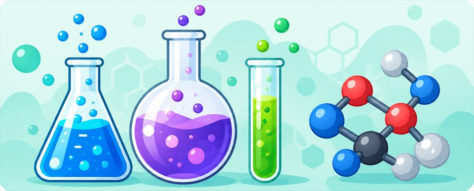

Units in this book
 Unit 1
Unit 1
Energy of Motion
In this unit, you'll become a motion detective, using one dramatic event as your case file: a speeding truck slams into a pole, and the crash-test dummy riding loose in its open bed goes flying off. Along the way you'll learn how scientists describe motion, measure speed, and explain the forces and energy that make a crash so violent in the first place.
 Unit 2
Unit 2
Gravity & Energy Related to Position
Every time an object gets lifted, dropped, or perched somewhere high, it's storing or releasing energy tied to gravity. In this unit you'll figure out what makes that stored energy grow or shrink, how gravity itself works between any two objects in the universe, and what happens as that stored energy turns into motion.
 Unit 3
Unit 3
Electricity & Magnetism
Some of the strongest forces in the universe never touch anything at all. In this unit you'll investigate the invisible fields around magnets, discover why a magnet grabs a steel paperclip but not a soda can, see how quickly that pull fades with distance, and figure out how flipping on an electric current can turn ordinary wire into a magnet you can switch on and off.
 Unit 4
Unit 4
Waves Transmitting Energy & Information
Every text you send, every song you stream, and every conversation you have travels as a wave. In this unit you'll figure out what waves actually are, how they carry both energy and information, and why the switch from analog to digital changed how the whole world communicates.
 Unit 5
Unit 5
Thermal Energy & Heat Flow
Every day your body senses thermal energy on the move: a cold soda sweats on a hot afternoon, hot cocoa cools while you do homework, and an ice cube disappears into a puddle. In this unit you'll zoom down to the level of jiggling, zooming particles to understand what temperature and heat really are, and why some things heat up or cool down faster than others.

Unit 6Chemical Energy & Reactions
Every time you bake a cake, pop a hot pack, or watch a nail rust, you're seeing chemistry in action. This unit dives into what really happens when substances mix - sometimes they just blend together, and sometimes their atoms rearrange into brand-new materials with brand-new properties. Along the way you'll discover the hidden rule that keeps every reaction honest: matter is never created or destroyed, only rearranged.